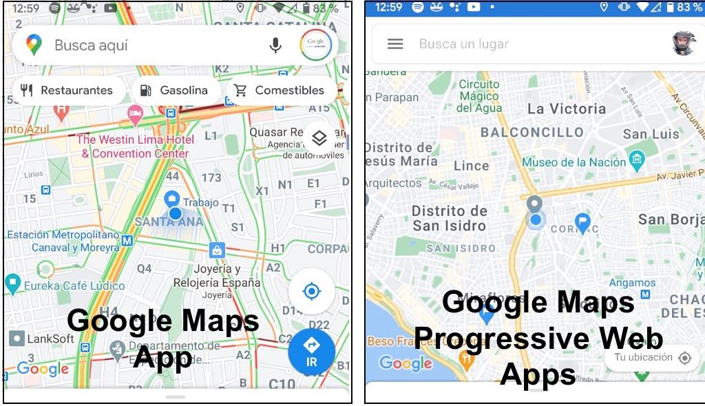
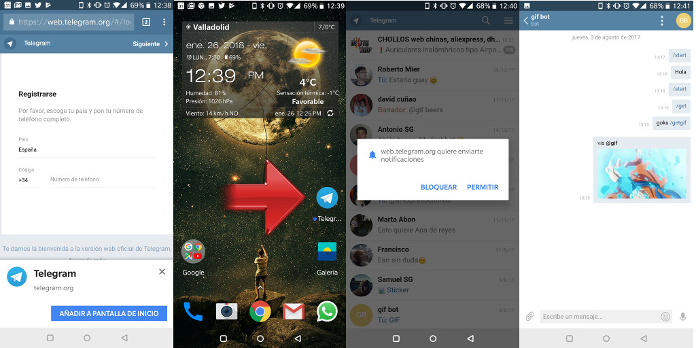

Plataformas y Herramientas para Desarrollar PWAs
1. Plataformas de Desarrollo
Existen diversas plataformas que facilitan el desarrollo de PWAs. Algunas de las más populares son:
- Google Chrome DevTools: Herramientas de desarrollo integradas en el navegador Chrome que facilitan la creación y depuración de PWAs.
- Microsoft Edge DevTools: Herramientas similares a las de Chrome pero adaptadas para el navegador Edge.
- Firefox Developer Tools: Herramientas de desarrollo en el navegador Firefox que también admiten la creación de PWAs.
2. Herramientas de Frameworks
Frameworks y bibliotecas que simplifican el desarrollo de PWAs:
- React: Biblioteca de JavaScript mantenida por Facebook que facilita la construcción de interfaces de usuario interactivas.
- Angular: Framework de desarrollo web mantenido por Google, especialmente adecuado para la creación de PWAs.
- Vue.js: Framework progresivo para la construcción de interfaces de usuario, fácil de integrar en proyectos existentes.
3. Herramientas de Gestión de Estado
Estas herramientas son útiles para gestionar el estado de la aplicación en el desarrollo de PWAs:
- Redux: Biblioteca de gestión de estado para aplicaciones JavaScript, ampliamente utilizada en proyectos de React.
- Vuex: Biblioteca de gestión de estado para aplicaciones Vue.js, facilitando el manejo de datos compartidos.
- NgRx: Biblioteca de gestión de estado para aplicaciones Angular, basada en el patrón Redux.
4. Imágenes de Ejemplo
Imágenes que puedes utilizar como ejemplos en tu PWA:

